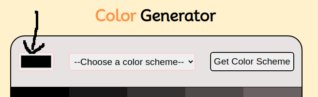
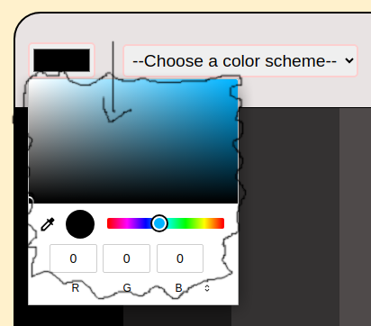
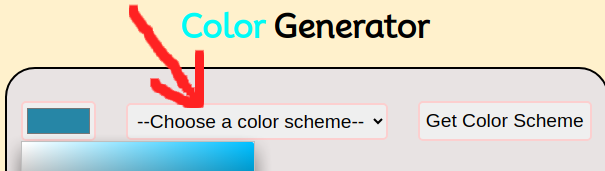
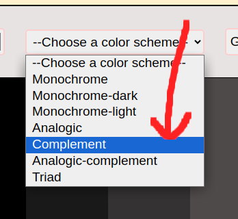
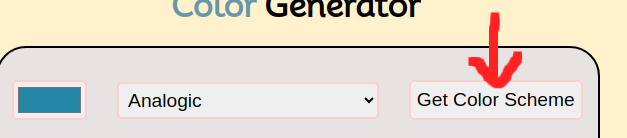
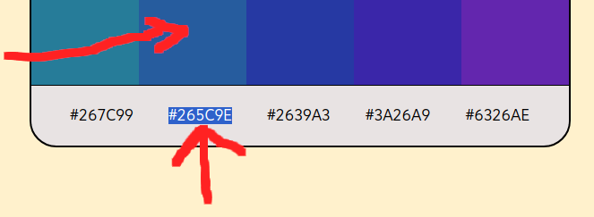

Let's choose a unique color together! 😄
Step: 1

First, we must click on the color box pictured above to get started.
Step: 2

Next, use the color bar to choose a color, and then you can choose any
desired shade of that color by clicking anywhere in the large box.
Step: 3

Once the color is chosen you can select a color scheme in the drop down
menu. There are 7 selections.
Step: 4

Choose one of the several selections in the drop down menu.
Step: 5

When you have the color, and scheme selected you can now click the "Get
Color Scheme" button and it will generate 5 options of the color and
like colors for you depending on the color scheme you chose.
Step: 6

Lastly, you can click on the color or the code and it will copy to your
mouse so you can easily paste it where needed. Thanks for using this
application! 😃
Go Home?